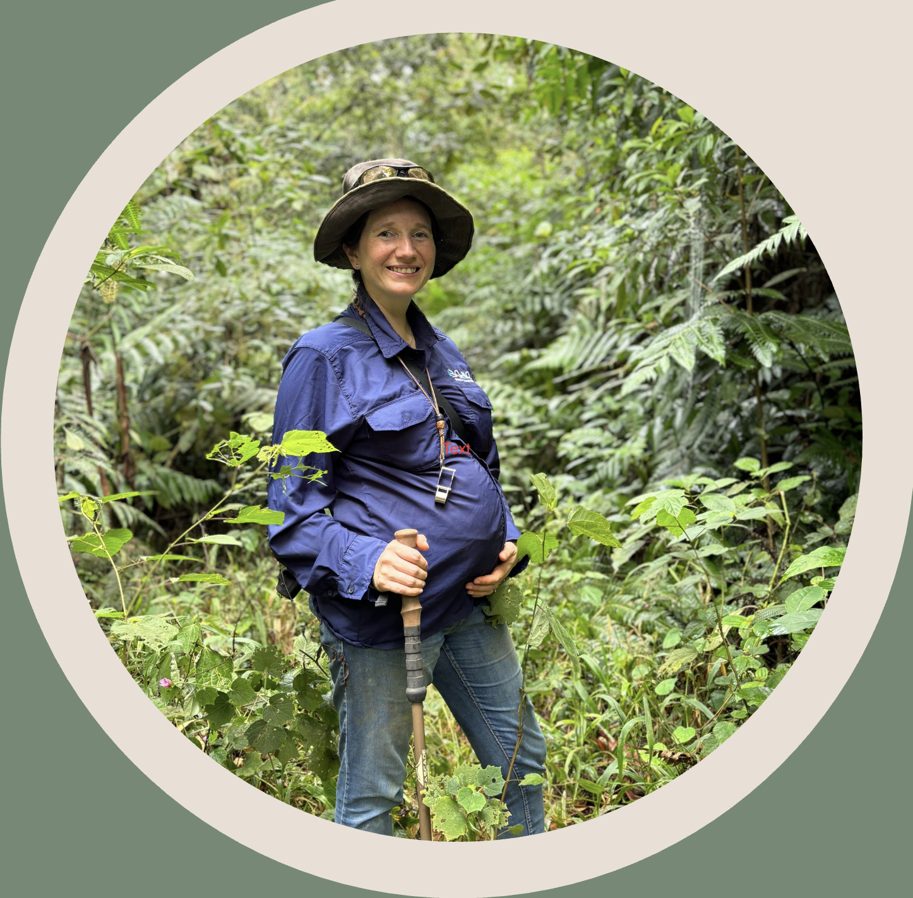

I wanted to become a geologist ever since I was in Primary School, for I loved the outdoors and did not want an office job. I found Earth Sciences fascinating, so to be able to do fieldwork and work in Exploration is just my passion. I am fortunate enough that my husband also shares and understands this passion so when we decided to become parents we were both on board with the fact I wanted to keep going to the field and we were going to make it work together.
When my first boy, Anibal, was born I was able to spend an important time with him due to COVID lockup, so at 18 months he was well breastfeed and I was eager to go back to the field. It was not easy, but I had the support of my colleagues, family and of course my husband's, I knew Anibal was well taken care of, so I went to the field confident that he was well and growing to be a happy kid. Did I felt guilty? Of course yes, even cried sometimes. But being able to do geology was also fulfilling and I always have fun in the field. It was definitely not easy, but I was determined to make it work and I felt it was worthwhile.
That time was very important for it gave me the ability to manage a project of my own, apply what I learnt during my PhD so I was more confident of myself as a geologist, and also plan for a strategy to optimize time in the field so when I return home I was able to truly spend time with my family. After this, came the opportunity of a promotion to Exploration Manager, which I initially discarded for we were looking forward to have a brother for Anibal. To me, it is very important to BE in the field with my team, but the problem was that I was not going to be able to go to the field if I got pregnant (high altitude is risky for pregnancy). So in my mind it was impossible to become a manager and a mother again at the same time. However, I want to thank my boss, Javier Ortuzar, who kept encouraging me and presented alternatives on how that situation can be handled when the time came. I still remember his words: "I don't believe that in a company like this there can't be career paths for women leaders, I have a daughter and I would like her to have an opportunity too". So when I got pregnant with Lucas, we planned a calendar to have an Interim Manager while I was away and also had a return schedule so I am able to breastfeed my son properly.
Right now, I'm a mother of two and an Exploration Manager. I'm living my dream of exploring in a fascinating, foreign country, where I live and enjoy with my family. I'm continuously growing with all the challenges and teachings that Motherhood and Geology keep bringing me, both complementing each other with wonderful experiences and learnings that I even sometimes use in each other. I'm definitely thankful first and above all to my husband, Gonzalo Henriquez, who has been super supportive of his crazy wife, and is a great father to Anibal and Lucas. Without him, this would not be able to be possible. I'm also very thankful to the leadership in Barrick Exploration through the years, who have been fundamental in my career and never made me feel I was underestimated for being a woman.